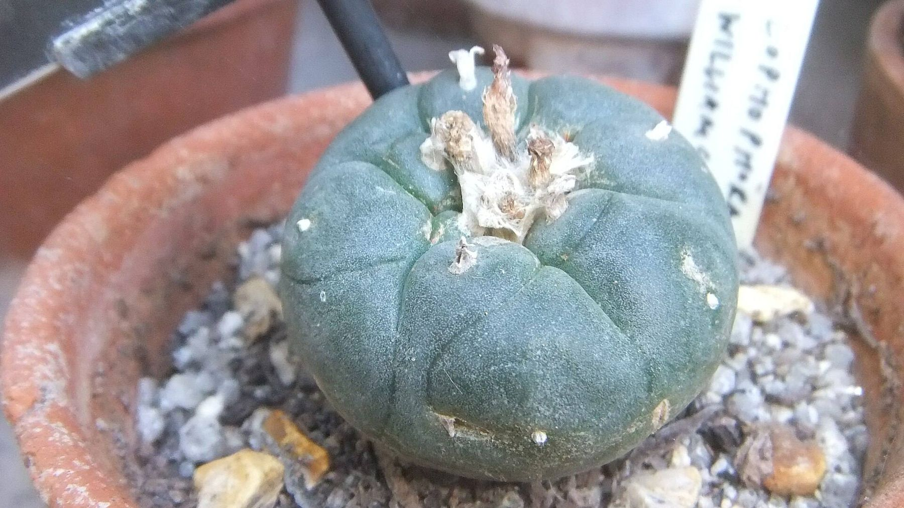
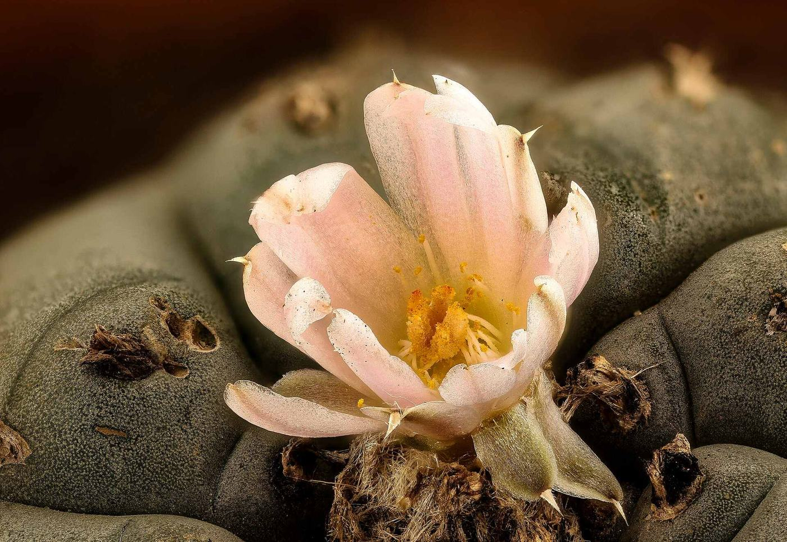
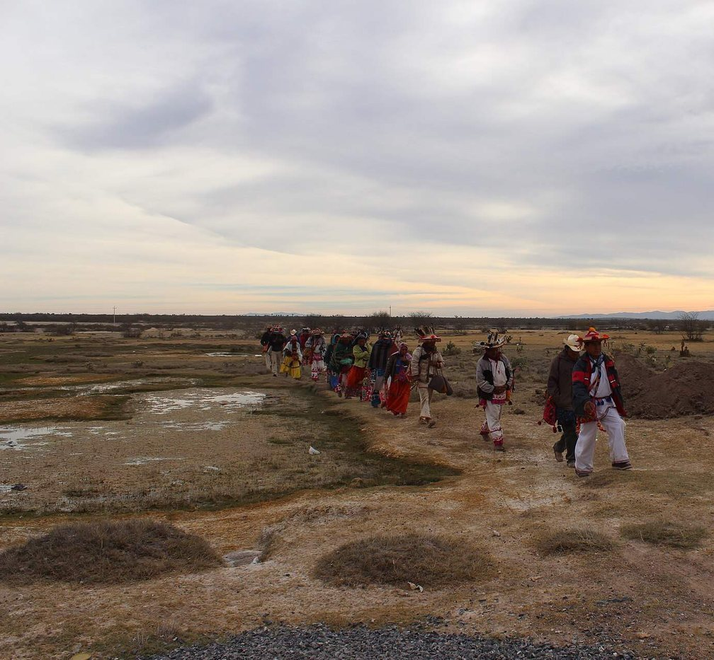
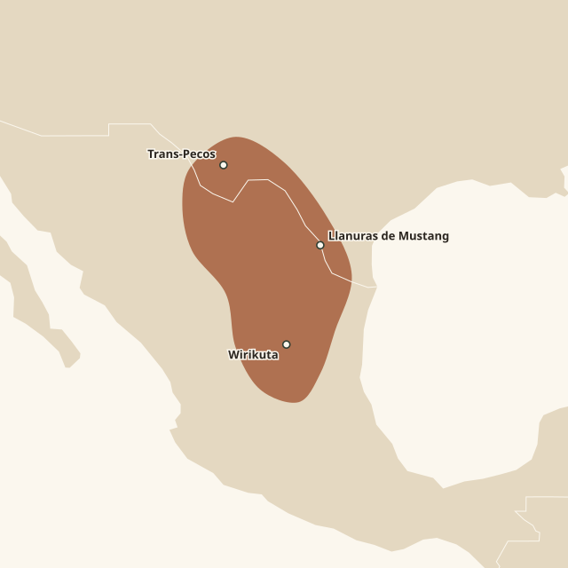
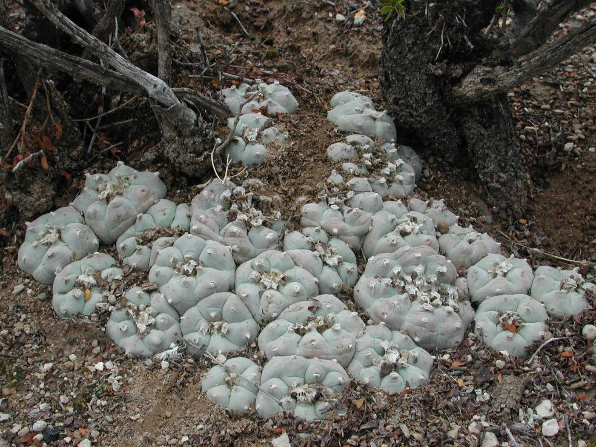
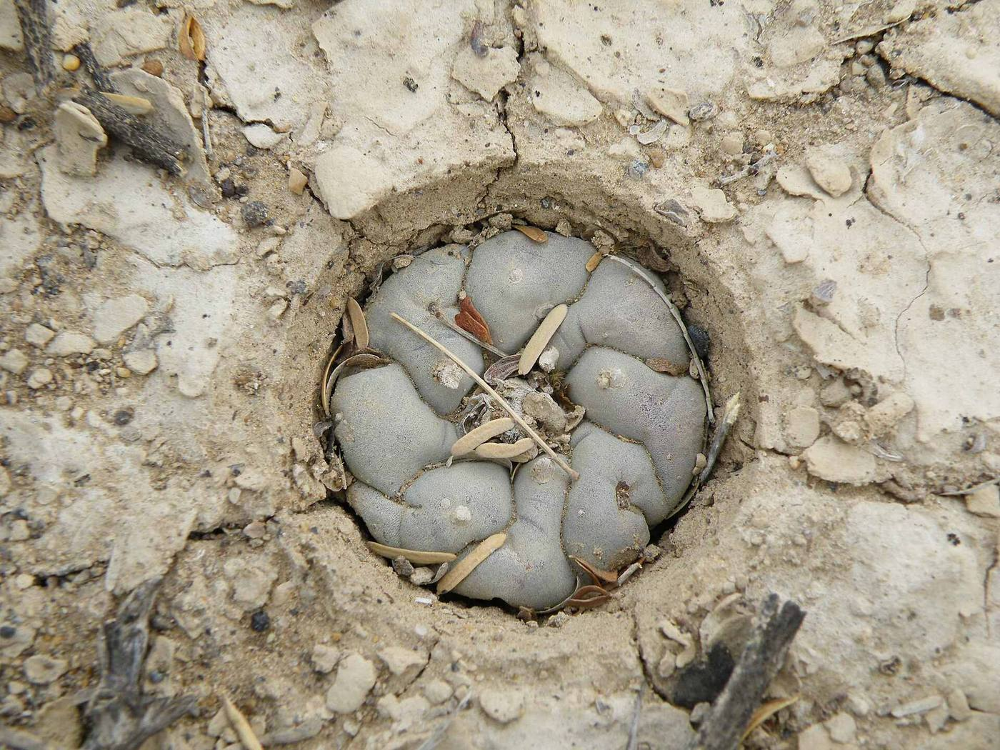
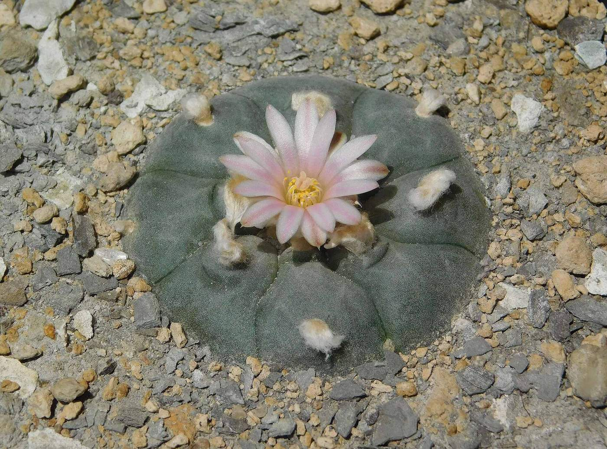
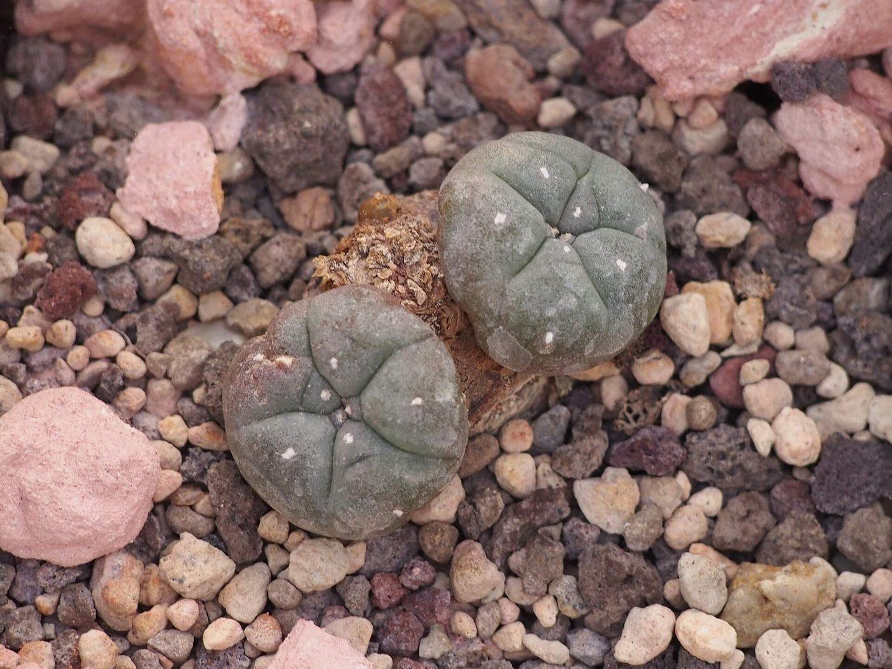
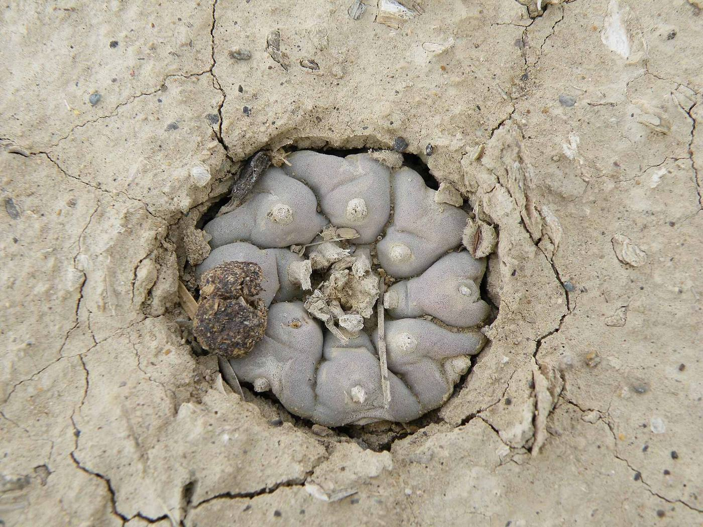

Cactus · Cactáceas · Desierto chihuahuense
Peyote
Lophophora williamsii (Lem. ex Salm-Dyck) J.M.Coult.
A ras de suelo, sin una espina, el peyote pasa desapercibido. Para el pueblo wixárika es el híkuri, un ser que une el maíz, el venado y el camino a Wirikuta, y su historia en el desierto tiene más de cinco mil años.24
También se llamahíkuri · híkuli · péyotl · tútu · jículi · botón de mescal

- Qué es
- Cactus pequeño y sin espinas, de crecimiento muy lento
- Territorio
- Desierto chihuahuense: sur de Texas y norte y centro de México
- Parte usada
- La cabeza que asoma del suelo, el «botón»
- Principios activos
- Mescalina y otros alcaloides
- Empieza y dura
- 45–90 min · 8–12 h, a veces más
- Quién guarda su memoria
- Wixárika, rarámuri, cora y la Iglesia Nativa Americana
Botánica
Un disco azul grisáceo a ras de suelo
Es un cactus sin espinas que rara vez pasa de los veinte centímetros. Casi todo lo que se ve es una cabeza ancha y aplanada, con costillas suaves y mechones de pelo fino en la cima. Debajo, una raíz gruesa, con forma de zanahoria, lo ancla al suelo seco.3
De su centro nacen flores rosa pálido de un par de centímetros que duran pocos días, entre marzo y septiembre. Después aparece un fruto en forma de maza, rosado, con semillas negras muy pequeñas.3
Es de los cactus de crecimiento más lento. En cultivo, una planta nacida de semilla tarda unos cinco años en alcanzar tamaño de cosecha.3

- Familia
- Cactaceae
- Porte
- Cactus globoso, sin espinas
- Flor
- Rosa pálido, en el centro
- Fruto
- Baya rosada con semillas negras
Memoria y tradición
El cactus que camina con el venado
Para el pueblo wixárika, el híkuri forma parte de una relación que enlaza el maíz, el venado y los lugares sagrados de la peregrinación a Wirikuta, en el desierto de San Luis Potosí. Quienes participan en el proyecto «Hablemos de Híkuri» cuentan que ese significado se aprende caminando.4
En una cueva del sur de Texas se han hallado botones de peyote de hace unos 5.700 años, y en una tumba de Coahuila, trozos de entre los siglos IX y XI que aún guardaban alcaloides.23 En la época colonial su uso entre los indígenas se prohibió y la Inquisición lo persiguió.3
El rito se extendió hacia el norte. En 1918 se fundó en Estados Unidos la Iglesia Nativa Americana, que lo toma como sacramento.11

En el tiempo
Botones de peyote enterrados en una cueva del sur de Texas, los más antiguos que se han fechado.2
En una tumba de una cueva de Coahuila aparecen trozos de peyote con alcaloides todavía detectables.3
El uso queda prohibido entre los indígenas y la Inquisición lo castiga.3
Antoine Lemaire lo describe como Echinocactus williamsii; en 1894 John Coulter lo pasa al género Lophophora.3
Arthur Heffter aísla la mescalina.10
Se funda la Iglesia Nativa Americana en Estados Unidos.11
En Basilea, los primeros ensayos modernos con mescalina en personas sanas.67
Sus nombres
- híkuri
- wixárika
- tútu
- wixárika: la flor del peyote
- híkuli
- rarámuri
- péyotl
- náhuatl, la lengua de los mexicas
- huatari
- cora
- wokowi
- comanche
- seni
- kiowa
- ho
- apache mescalero
Los wixaritari distinguen varias formas del cactus, y algunas, como la que recuerda al maíz, tienen un valor especial para quienes guían la peregrinación.3
Territorio y cuidado
Un desierto, un camino y una planta lenta

Crece en el desierto chihuahuense, desde el sur de Texas hasta el centro de México (Tamaulipas, Coahuila, Nuevo León, San Luis Potosí y Zacatecas), a menudo bajo la sombra de arbustos como el mezquite.13
Con un crecimiento tan lento, la recolección pesa mucho sobre las poblaciones. Dentro del pueblo wixárika, el proyecto «Hablemos de Híkuri» nació de una observación sencilla: cada peregrinación exigía caminar más para encontrarlo.4
Estado de conservación · VU, vulnerable
La Lista Roja de la UICN lo clasifica como vulnerable.5

Qué ayuda
- Respetar el carácter sagrado del híkuri para los pueblos que lo cuidan.
- Preferir plantas cultivadas a las de recolección silvestre.
- Apoyar proyectos de conservación dirigidos por las propias comunidades.
Qué contiene
Mescalina, la molécula de la luz
El principal alcaloide activo es la mescalina, una fenetilamina que activa el receptor de serotonina 5-HT2A, el mismo en que actúan la psilocibina y el LSD.67 El cactus contiene más de cincuenta alcaloides en total, pero solo la mescalina tiene efectos psicoactivos claros.3
La cantidad de mescalina varía mucho de un cactus a otro, según la edad, el cultivo y la parte de la planta, y por eso los ensayos clínicos usan mescalina pura, de dosis conocida.10
 MescalinaFenetilamina · alcaloide principal
MescalinaFenetilamina · alcaloide principalActiva el receptor de serotonina 5-HT2A. En un ensayo de 2024, un fármaco que bloquea ese receptor anuló casi todos sus efectos.
La experiencia
Un día largo
Empieza a notarse entre los 45 y los 90 minutos y se prolonga entre ocho y doce horas, a veces más. En los ensayos se describe como una experiencia parecida a la del LSD o la psilocibina, con colores muy intensos, patrones y emociones fuertes. La diferencia principal es la duración.6
Con el cactus son frecuentes las náuseas y el vómito, sobre todo al subir. En muchas tradiciones esa purga forma parte del camino.10
Esquema orientativo: cambia con la preparación, la cantidad y la persona.
Investigación
Qué se ha estudiado
En 2023, un ensayo en Basilea comparó en personas sanas mescalina, LSD y psilocibina: 500 mg de mescalina produjeron una experiencia muy parecida a la de 100 µg de LSD y a la de 20 mg de psilocibina.6 En 2024, otro mostró que sus efectos aumentan con la dosis y que dependen del receptor 5-HT2A.7
Una encuesta a personas que la habían usado por su cuenta recogió mejoras psiquiátricas que ellas mismas contaban.12 Es información de encuesta, sin grupo de comparación.
Alcance de estos datosEsos ensayos se hicieron con mescalina pura, en personas sanas y con supervisión médica. No evaluaron un tratamiento ni el peyote ni la peregrinación, y no existe ningún medicamento con mescalina.
Con cuidado
Lo que conviene saber antes
Una experiencia muy larga y, a veces, difícil; en personas predispuestas, episodios de psicosis o de manía.8
El litio es la combinación más peligrosa: se han descrito convulsiones y psicosis.9
Galería
Mirar de cerca




Para seguir
Libros y medicinas emparentadas
 En la tierra mágica del peyoteFernando Benítez · 1968En la biblioteca de APDER →
En la tierra mágica del peyoteFernando Benítez · 1968En la biblioteca de APDER →El cactus columnar de los Andes, con la misma mescalina.
MoléculaMescalina3,4,5-trimetoxifenetilaminaEl principio activo de ambos cactus.
Un cactus del mismo desierto que recibe a veces ese nombre.
Otro cactus pequeño del norte de México.
Fuentes
De dónde sale cada dato
- Royal Botanic Gardens, Kew. Plants of the World Online: Lophophora williamsii (Lem. ex Salm-Dyck) J.M.Coult. powo.science.kew.org.
- Bruhn JG, De Smet PAGM, El-Seedi HR, Beck O. Mescaline use for 5700 years. Lancet. 2002;359(9320):1866.
- Rätsch C. The Encyclopedia of Psychoactive Plants. Rochester: Park Street Press; 2005. Entrada «Lophophora williamsii».
- Bonilla L, Nájera P. Hablemos de Híkuri (Let's Talk About Hikuri): proyecto de conservación del peyote del pueblo wixárika. wixarika.org.
- Terry M. Lophophora williamsii (versión corregida de la evaluación de 2013). The IUCN Red List of Threatened Species 2017: e.T151962A121515326.
- Ley L, Holze F, Arikci D, et al. Comparative acute effects of mescaline, lysergic acid diethylamide, and psilocybin in a randomized, double-blind, placebo-controlled cross-over study in healthy participants. Neuropsychopharmacology. 2023;48(11):1659-1667.
- Klaiber A, Schmid Y, Becker AM, et al. Acute dose-dependent effects of mescaline in a double-blind placebo-controlled study in healthy subjects. Transl Psychiatry. 2024;14:395.
- Johnson MW, Richards WA, Griffiths RR. Human hallucinogen research: guidelines for safety. J Psychopharmacol. 2008;22(6):603-620.
- Nayak SM, Gukasyan N, Barrett FS, Erowid E, Erowid F, Griffiths RR. Classic psychedelic coadministration with lithium, but not lamotrigine, is associated with seizures: an analysis of online psychedelic experience reports. Pharmacopsychiatry. 2021;54(5):240-245.
- Cassels BK, Sáez-Briones P. Dark classics in chemical neuroscience: mescaline. ACS Chem Neurosci. 2018;9(10):2448-2458.
- Stewart OC. Peyote Religion: A History. Norman: University of Oklahoma Press; 1987.
- Agin-Liebes G, Haas TF, Lancelotta R, et al. Naturalistic use of mescaline is associated with self-reported psychiatric improvements and enduring positive life changes. ACS Pharmacol Transl Sci. 2021;4(2):543-552.
- Peyotes (Lophophora williamsii) con sus mechones de pelo fino. Chelsea Physic Garden, Londres. YubKooka · CC BY-SA 4.0
- Peyote en flor, de la zona de Texas y México donde es nativo. USGS Bee Inventory and Monitoring Lab · dominio público
- La peregrinación a Wirikuta de los wixaritari, en San Luis Potosí. Kauyumarie · CC BY-SA 4.0
- Mapa APDER, con datos de Natural Earth · dominio público
- Peyotes silvestres en Wirikuta, cerca de Wadley, San Luis Potosí. Kauderwelsch · CC BY-SA 3.0
- Dibujos de moléculas APDER
- Peyote silvestre en su hoyo de tierra seca. Amante Darmanin · CC BY 2.0
- Un peyote en flor. Resenter1 · CC BY 2.0
- Dos jóvenes sobre grava volcánica. Agnieszka Kwiecień · CC BY-SA 4.0
- Cabeza de peyote vista desde arriba, con sus costillas y sus mechones. Amante Darmanin · CC BY 2.0
Última revisión: 24 de noviembre de 2026. Si ves un error, escríbenos a info@apder.org.